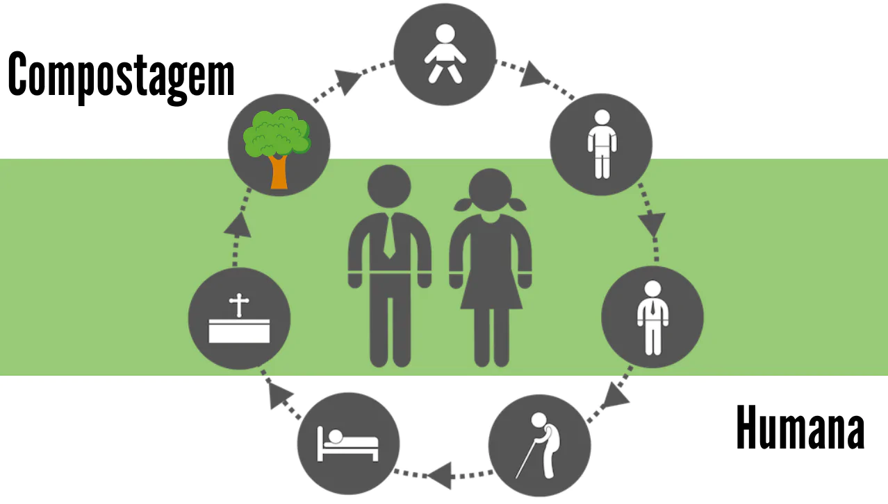

O Cemitério Ecológico, diferentemente do cemitério convencional que temos hoje em dia, busca preservar o meio-ambiente apresentando novas formas de sepultamento totalmente Ecológicas que não degradam a natureza. Apresentando diversos tipos de sepultamento como: Enterro Verde, Aquamação, Decomposição Aeróbica e Compostagem Humana. Já o cemitério convencional apresenta 3 modelos. Sendo o cemitério vertical o primeiro deles, surgiram para solucionar a falta de espaço para os sepultamentos, sendo utilizados nas grandes cidades. O segundo é o cemitério horizontal, sendo a forma mais comum e antiga de sepultamento. Nele os corpos são sepultados de forma subterrânea, também possuindo uma área aberta com jazigos e túmulos, geralmente feitos de mármore. O terceiro modelo é o cemitério jardim/parque que utiliza uma grande área verde para realizar os sepultamentos e dar um ar mais natural e tranquilo ao ambiente. Os jazigos são subterrâneos, cobertos por um amplo gramado, e os túmulos são normalmente identificados por uma placa na cor branca, podendo variar de acordo com a regra do cemitério.O Cemitério Ecológico também apresenta esses 3 modelos, mas de forma ecológica, feita para preservar o meio-ambiente utilizando materiais biodegradáveis ou de baixa emissão de poluentes. Evitando os riscos apresentados pelo cemitério convencional, risco de contaminação das águas subterrâneas e superficiais por bactérias e vírus que se proliferam durante os processos de decomposição
A compostagem humana, também conhecida como compostagem de resíduos orgânicos humanos, é um processo pelo qual os restos mortais humanos são transformados em composto orgânico por meio da decomposição microbiana controlada. Essa prática sustentável oferece uma alternativa ecológica à cremação e ao sepultamento tradicional, promovendo o retorno dos nutrientes ao solo de forma natural. Saiba mais
O enterro verde, também chamado de sepultamento natural ou sepultamento verde, é uma prática funerária que busca minimizar o impacto ambiental da disposição dos corpos após a morte.
Ao contrário dos métodos tradicionais de sepultamento, que envolvem caixões de madeira tratada, produtos químicos e cemitérios convencionais, o enterro verde utiliza métodos mais naturais, como o envolvimento do corpo em tecidos biodegradáveis e seu sepultamento em áreas designadas para conservar a natureza.
Essa abordagem sustentável respeita os ciclos naturais da vida e da morte, promovendo uma conexão mais íntima com a terra e reduzindo o impacto ambiental associado aos funerais tradicionais.
A aquamação, também conhecida como cremação aquática ou ressomação, é um método inovador de disposição final dos corpos humanos que está ganhando popularidade como uma alternativa mais ecológica à cremação tradicional e ao enterro. Nesse processo, o corpo é submetido a um processo de decomposição acelerada em água e hidróxido de potássio, resultando na redução dos tecidos orgânicos a seus componentes básicos, deixando apenas os ossos. O líquido resultante é tratado para ser seguro e pode ser devolvido à natureza ou descartado de forma responsável. A aquamação oferece uma maneira mais sustentável de lidar com os restos mortais, reduzindo a pegada de carbono e preservando os recursos naturais. Saiba mais
A reciclagem e o tratamento responsável de resíduos são pilares fundamentais da sustentabilidade ambiental, e isso se estende até mesmo ao cuidado com os resíduos humanos. O necrochorume, o líquido resultante da decomposição de corpos pode representar um desafio ambiental significativo devido à sua potencial contaminação do solo e da água. No entanto, por meio da implementação de melhores técnicas de tratamento e reciclagem é possível contornar esse desafio. Saiba mais